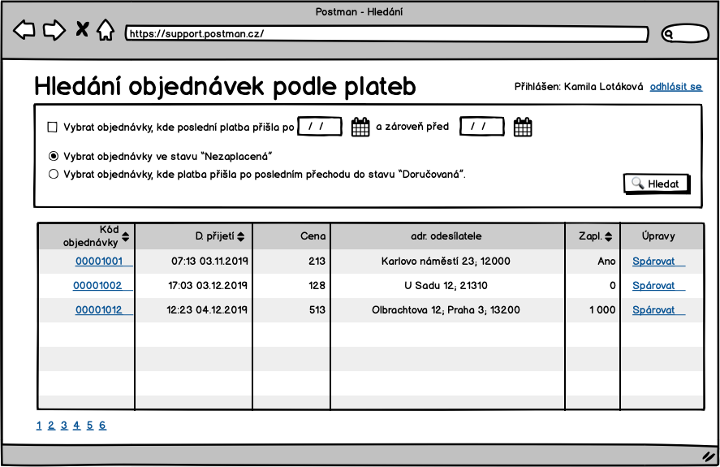

Obrazovky
Zde jsou schematicky popsané obrazovky systému.
S-000 - Info box
V některých pÅ™Ãpadech systém potvrzuje, že operace dopadla dobře, nebo že neco nenà možné udělat a zárověn to nemá povahu validace pole. V těchto a podobných pÅ™Ãpadech budem ukazovat oznámenÃ:

Ve výsledku to může vypadat odlišně.
S-00 - Přihlašovacà obrazovka
Přihlašovacà obrazovka

Chyba ve formuláři se zobarazà následovně:

S-01 - Základnà rozcestnÃk

Sekci "PracovnÃk podpory" uvidà pouze pracovnÃk podpory, stejně se chová sekce "Dispečer". Detaily toho, kdo co vidà jsou vidět za analýzy.
S-02 - OdhlášenÃ

S-03 - Hledánà balÃků 📦

Do pole hledat, pujde zadat část libovolné adresy, kód balÃku, telefon zákaznÃka, čast jména, prostě cokoliv.
S-04 - Detail objednávky
Stránku může být rozdělená pomocà záložek na vÃce. Pokud odkaz na detail balÃku nenà aktivnà znamená to, že balÃk fyzicky nemáme a ani jsme neměli. Obrazovka obsahuje několik samostatných sekcÃ:
- Obecné infromace o objednávce
- Platby
- Kontaktnà historie
- Události
- Daňové doklady
- ÄŒÃslo objednávky a variabilnà symbol jsou stejné hodnoty.
Detaily záznamů kontaktnà historie na této stránce nejsou vidět. Pro ně by měla vzniknout nová stránka s jejich seznamem a zde přibýt odkaz na nÃ.
TlaÄÃtka zde budou zobrazená podel aktuálnÃch možnostÃ. NapÅ™Ãklad tlaÄÃtko "Označit za nezaplacenou" nebude vidět ve stavu objednávky Nezaplacená.
S-041 - Potvrzenà odpárovánà platby 💵
Pokud pracovnÃk podpory na obrazovce S-04 detail objednávky stiskne odpárovat, tak se mu zobrazà potvrzovacà dialog:
{kind=link}

S-045 - Vystavit dobropis 💵
S-046 - Vystavit fakturu 💵

S-047 - Vytvořit záznam do komunikačnà historie

S-048 - Rozdělenà objednávky mezi dvě platby 💵

Validace:
- Pokud bude převáděná část vetÅ¡Ã než celková částka platby, pak se zobrazÃ: "Nelze převést vyÅ¡Å¡Ã částku než je samotná platba."
- Pokud pracovnÃk nevyplnà pole s ÄÃslem zakázky pak se zobrazÃ: "ÄŒÃslo zakázky je povinné".
- Pokud je vyplněná neexistujÃcà zakázka, pak se zobrazÃ: "Zadaná zakázka neexistuje."
S-05 - Detail balÃku 📦
ÄŒÃslo balÃku v nadpisu stránky bude kód balÃku. Pokud balÃk kód balÃku namá, pak zde bude kód internÃho štÃtku.
Doručovacà odresa balÃku nemusà být ta, kterou zadal na objednávce zákaznÃk. Pokud doručujeme do dalÅ¡Ãho depa, pak zde bude adresa depa. Doručovacà adresu, kterou zadal klient lze dohledat na objednávce.

TlaÄÃtka pro fyzickou manipulaci s balÃkem jsou dostupná pouze dispečerovi. Jedna se o:
- Přidat záznam o poškozenÃ
- Přidat záznam o přebalenÃ
- Přidat měřenÃ
- Rozdělit balÃk
Odkaz na detail je z hledánà balÃků S-03 a z detailu objednávky S-04.
Část napárované balÃky popisuje stav, kdy přijde balÃk, který se nepodařà spojit s objednávkou, dispečer balÃk změřà a zvážà a opatřà internÃm štÃtkem. Teprve dodatečně se přijde na to, k jaký to byl balÃk u jaké objednávky.
S-051 - Změna doručovacà adresy

Může být součástà stránky S-04 Detail objednávky
S-052 - Připojit balÃk 📦
S-053 - Poškozenà balÃku 📦
Obrázky u osob nejsou nutné. Na nahrávánà fotek osob nenà UC.

S-054 - Chyba při zpracovánà balÃku 📦
Alternativou k předchozà obrazovce je obecná obrazovka pro chybu při zoracovánà balÃku.
S-06 - Přehled plateb

V poslednÃm sloupci bude vidět, jestli je platba spárovaná s objednávkou. Pokud ano, pak zde bude odkaz na detail objednávky.
Checkbox "Zobrazit pouze nespárované" platby umožnà omezit pohled jen na nespárované.
Pokud je nějaké ÄÃslo odchozÃho účtu zvýrazněné jako odkaz, pak to znamená, ze z toho účtu nám přišlo vÃc platek a kliknutÃm na odkaz si lze tyto platby vyfiltrovat - S-08 seznam plateb vyfiltrovaný podle odchozÃho účtu.
S-07 - Přidánà platby

S-08 - Seznam plateb vyfiltrovaný podle odchozÃho účtu

S-09 - Spárovat platbu s objednávkou

Po potvrzenà "Spárovat" nebo "Cancel" se uživatel vracà na stránku v výpisem plateb.
S-10 - Hledánà objednávek

Objednávky lze filtrovat podle:
- Textu - bude se hledat v polÃch:
- adresách
- emailech
- Minimálnà a maximálnà ceny objednávky.
- Stavu objednávky - zde půjde hledat pouze nezaplacené objednávky. Ve seznamu stavů bude možnost hledat objednávky v libovolném stavu.
- Počtu dnÃ, které uplynuli od založenà objednávky, kde nepřišla platba. - Pokud nakonec platba přišla, pak se taková objednávka nevyhledá.
- Vybrat objednávky, ke kterým dorazil aspoň jeden balÃk.
- Vybrat objednávky, ke kterým nedorazil žádný balÃk.
S-011 - Hledánà objednávek podle plateb
Obrazovka pro hledánà chybových stavů u plateb. NapÅ™Ãklad:
- Objednávek, kde zákaznÃk po zaplacenà poslal platbu podruhé.

S-11 - Spárovat objednávku s platbou
Po stisknutà "Spárovat" na S-10 se zobrazà obrazovka:

S-12 - Seznam uživatelů
Odkaz na tuto stránku povede pÅ™Ãmo z hlavnÃho rozcestnÃku S-01.

Poslednà uživatel Milan Strnad nenà aktivnà a nebude se moc přihlásit do systému.
S-13 - Přidat uživatele 👱

S-14 - Upravit uživatele 👱

S-15 - Nastavit heslo uživatele 👱

S-200 - Zadánà kódu balÃku 📦
S-201 - Zadánà zpátečnà adresy
Stránka sloužà pro opsánà adresy odesÃlatele z balÃku. Protože adresa můze být poškozená nebo nemusà být uvedená vůbec, jsou jednotlivá pole nepoviná. Pouze by zde měla být validace na maxÃmálnà délku.

S-202 - Kontrola zpátečnà adresy

S-203 - Je balÃk poškozen? 📦

S-204 - Poškozenà balÃku 📦

S-205 - Tisk internÃho štÃtku 🖨 🏷

S-206 - Zadánà spotřeby obalového materiálu

S-207 - Měřenà a váženà ⚖ï¸

Všechna pole jsou povinná a musà obsahovat ÄÃselné hodnoty.
S-208 - Fronta kam má být balÃk vložen 📦
S-209 - Načtenà internÃho štÃtku 🏷
Stránka pro naÄÃtánà internÃho štÃtku se načte tak, ze focus je v poli pro kód internÃho štÃtku. To umožnà dispečerovi čtečkou naÄÃt čárový kód bez dalÅ¡Ãho klikánÃ. Stejně tak by stránka měla poznat, že kód byl načten a přejÃt na dalÅ¡Ã stránku bez potvrzovánà tlaÄÃtkem "pokračovat".
Na stránce by měla být validace, že kód internÃho štÃtku existuje a balÃk je ve správném stavu. To co je správný stav zavisà na použitém UC.

S-210 - Co dál s chybovým balÃkem 📦

S-211 - Načtenà internÃho štÃtku 2 🏷
Stejná stránka jako je S-209 s tÃm, že na obrazovce je možnost zadat, že balÃk nemá internà štÃtek.

S-212 - Tisk štÃtku dopravce 🖨 🏷
Zároveň se zobrazenÃm této obrazovky se vytiskne štÃtek dopravce.